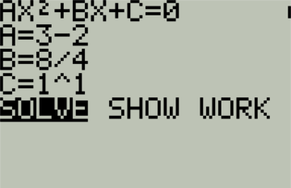

Z80 Assembly Math Program for the TI83+
The goal of this project was to create an extensive math program for my TI83+ calculator. There are two options for programming the TI83+. The first is TI-BASIC, which is a high level interpreted language. Since it is an interpreted language it runs very slow. Additionally, you do not have much control over the display. The second option is Z80 Assembly. While this is much harder to program in, the advantages are well worth the increased development time.
This code can be found on Github here and the assembler output can be found here.
Program Overview
The main menu is two dimensional where the tabs at the top indicate the area of math and the numbered options indicate the programs in that area.
There are several options for navigation. The arrow keys and be pressed to move the cursor and hitting ENTER will run the selected program.
Additionally, the number keys can be pressed to run the program listed by the number pressed.
The application contains 40 smaller math programs subdivided into 7 mathematical topics. Those include: Algebra, Geometry, Triangles, Circles,
Conic Sections, Statistics, and Physics. Each of these topics have been shortened to three letters and listed at the top of the screen.
The currently selected topic is indicated by the option displayed in inverted colors. As pictured to the left, GEOmetry is the currently selected topic.

In addition to the main menu, some options contain sub menus. One of these options is sequences, which is pictured to the left. Sequences has six
further sub options to choose from. This menu functions very similarly to the main menu. The user can return to the main menu by pressing [2nd]+QUIT.

The basic format of most programs starts with a prompt to the user for certain variables. The program then computes the answer and displays it to the screen.
The program pictured solves the quadratic formula. It begins by prompting the user for variables a, b, and c. Expressions will be evaluated before being assigned
to a variable, so a user can enter fractions or more complicated expressions. The program then lets the user decide to display the solution (SOLVE) or show work (SHOW WORK).

If the user chooses to show work, the calculator will display a step by step solution to the quadratic formula. This is shown to the left.
Please note that the method I used to generate these images discards the bottom couple rows of pixels.

There several programs that are formatted differently than the basic form demonstrated above. One such program is the unit circle diagram.
The angle of the intersecting line is controlled by the arrow keys. The program then displays the radians, the six trigonometry functions,
the coordinates, and a graphical representation of an angle based off the unit circle.
The development of this project was accomplished using an emulator. However, this application has also been heavily tested on hardware.
Although the TI84+ was not an intended target for this program, the application still functions on that device with minor graphical glitches.